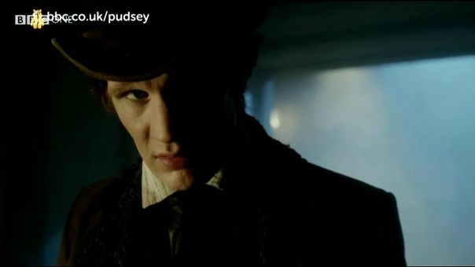

Эра Одиннадцатого Доктора
<<< НАЗАД ||| Великий детектив ||| ДАЛЬШЕ >>>
или с субтитрами:

The Great Detective
мини-эпизод для Детей в нужде
16 ноября 2012
Формат: 4-минутный эпизод
| Варианты озвучек: | * MVO BaibaKo |
|---|---|
| Скачивание и просмотр: |
Здесь впервые после серии «Хороший человек идёт на войну» (2011) появились Вастра и Дженни, а также было раскрыто, что Стракс пережил события той серии и отправился в их родное время, где теперь также живёт и Доктор после прощания с Пондами.

